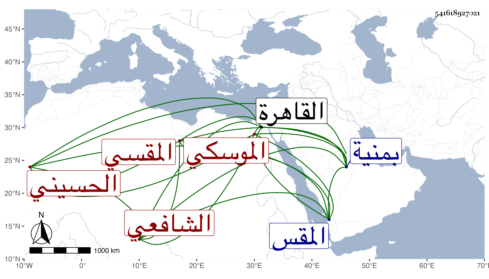

0902Sakhawi.DawLamic.ITO20230111-ara1.EIS1600.541618927021
Biography ID: 541618927021
204
محمد بن عبد الله بن عثمان بن عفان الشمس الحسيني بلدا المقسي ثم الموسكي الشافعي أخو الفقيه عثمان الماضي وأبوهما ووالد محمد الآتي . ولد في ربيع الأول سنة خمس وعشرين وثمانمائة بمنية فضالة وتحول مع أبويه وأخيه إلى القاهرة فسكنوا المقس وقرأ القرآن وجوده على الزين الهيثمي بل تلاه لأبي عمرو على عبد الغني الفارقاني وقرأ من الاهتمام تلخيض الإمام إلى الحج وكذا بعض مختصر التبريزي وجمع ألفية النحو وبحث في التبريزي على المناوي بل حضر عنده عدة تقاسيم ، وكذا قرأ في النحو على الحناوي وسمع على شيخنا وغيره وجلس لإقراء الأطفال كأبيه وأخيه بزاوية بقنطرة الموسكي فنبغ من عنده جماعة وأقرأ في بيت أزبك الظاهري وقطن تلك الناحية وتكسب مع ذلك بالخياطة على طريقة جميلة من النصح والوفاء وحج وتنزل في صوفية سعيد السعداء وغيرها بل خطب بأماكن كجامع عمرو نيابة ، ولمامات أخوه تكلم في تركته ثم لم يلبث أن مات ولده فورثه وتلقى عنه وظائف منها الإمامة بضريح الشافعي ، وهو خير متودد سليم الفطرة منجمع على شأنه .
